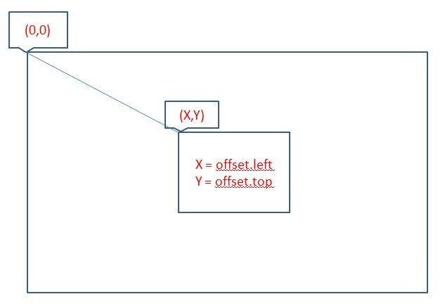
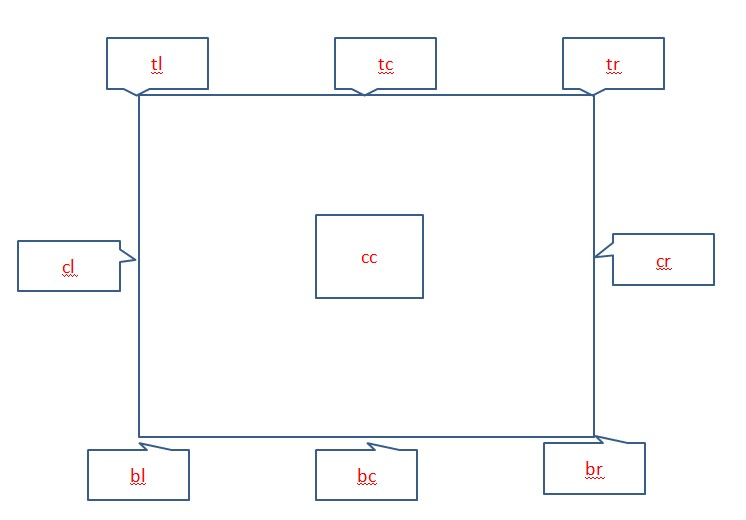
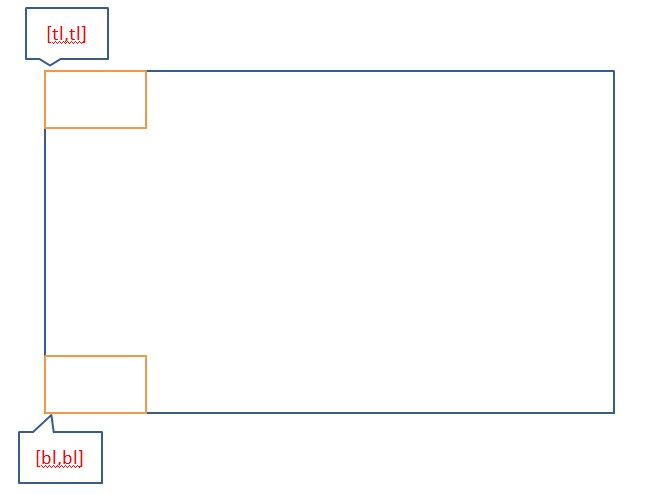
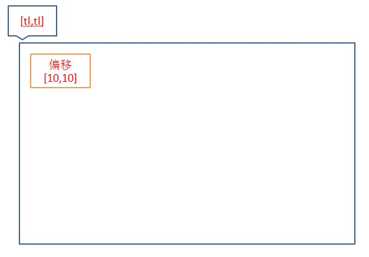

欢迎使用BUI！在这一章节里，我们将学习以下内容:
此处我们所指的位置是控件的绝对位置，控件的对齐依赖于控件的位置，我们先从下面的示例开始：
x,y属性来控制控件的位置。x,y是指控件相对于整个页面的位置，不等同于 left,top
直接操作控件的位置非常不方便，所以BUI提供了一种更容易理解和使用的方式-对齐，控件可以指定对齐的DOM元素、对齐方式以及偏离距离，通过下图我们来认识一下可选的对齐位置：

BUI的对齐是使用2个对齐位置构成的一个数组，下图是左上角和左上角对齐（['tl','tl']),左下角和左下角的对齐（['bl','bl']）：

：根据你的需求，你可以自由搭配上面的9种位置。
BUI在支持对齐的基础上也支持偏移量：

下面只是简单的列表，未显示从父类继承来的方法，详细信息请查看API文档
学完本章后，控件的基础部分就完成了，你可以从浮层开始学习BUI的控件体系。